Get artwork from the designer to the factory: save the files, send them, and record what went out.
Draft. Artwork isn't open to the team yet. The Artwork screens in Dev PLM are in Preview, so only admins can open them. For everyone else, Artwork isn't in the menu. Until Send to factory… opens for the Design head, the Design head sends files by hand and fills in the Dev Tracker date. See how.
Today, for the team
In Dev PLM, admins only for now
For everyone: Rules to remember and Reference.
Screenshots use made-up sample data. Click any picture to see it larger. This page is public, so folder paths and WeTransfer addresses in the pictures are shortened or changed. The tool shows the real ones.
For designers. When Artwork opens, Dev PLM finds the files by how the folders and files are named, so name them this way now. This is how one style should look.
| Folder or file | What it is |
|---|---|
| The artwork folder | The top folder for artwork on the Design site |
| Sample Beauty | The brand's folder |
| SMPL1004_Sample Lavender Bath Salts | The style's folder: Style #, underscore, description |
| V1 | The first version |
| V2 | The newest version: the highest number goes out |
| SMPL1004_V2.pdf | Goes out. Exactly one PDF |
| SMPL1004_V2_Outlines.ai | Goes out. Exactly one .ai with "outline" in its name |
| SMPL1004_V2.ai | The working file. It stays here |
| SMPL1004_V2.jpg | Shows in Dev PLM as the Artwork picture, once pictures open to the team. It stays here |
| Fonts, Links | Illustrator's folders. Ignored |
Open SharePoint from your Microsoft 365 apps and go to the Design site. No access? Ask Saul.
On the Design site, open the artwork folder, then the brand's folder. The style's folder is named with the Style #, an underscore, then the description. No folder yet? Ask the Design head.
Name it V1 for the first version. Use V2, V3 and so on for each new version. The highest number is the one that goes out. Once a version has gone out, put any change in the next V folder. Not sure if it has gone out? Ask the Design head.
Save exactly one PDF, and exactly one .ai with outline in its name. Capitals don't matter. Other files can stay in the folder. They don't go out.
For designers, once a style's ingredients are in. Saul to confirm where the list comes from and who tells the designer. See the yellow Draft note at the top. Until then, ask Saul.
Ask the Design head or Saul for it, until the place is confirmed.
Add the ingredients to the artwork.
Follow Save the artwork files. Use the next V number, because the earlier version has gone out.
The Design head sends it as in Send artwork by hand. Group 2 of the report clears once Artwork With Ingredients Sent To Factory is filled in.
For the Design head, until Send to factory… opens for them.
Click Reports in the side menu. On Missing Artwork Report, click Run. A panel opens with what's due, in three groups 1 2 3. For more, see Run a report.
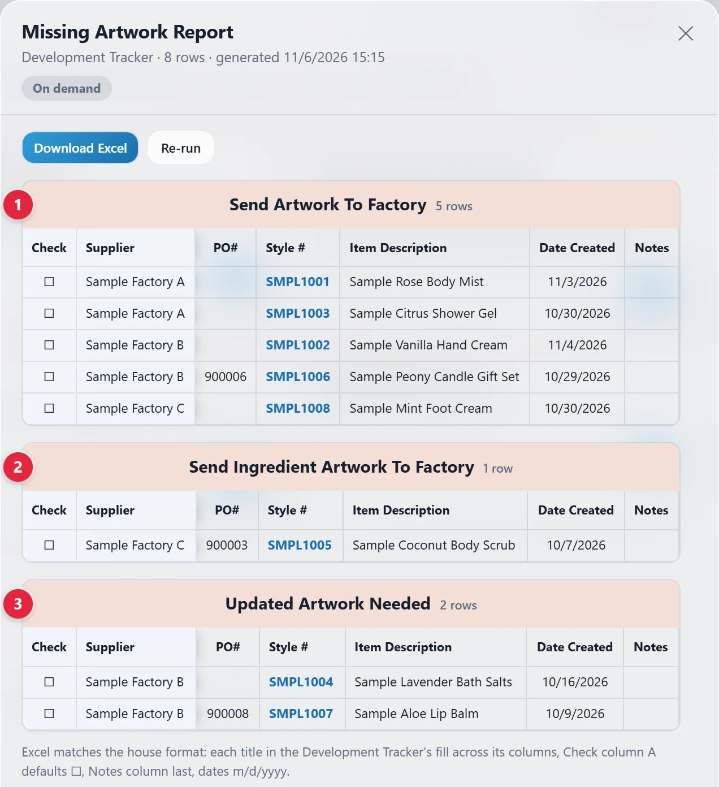
On the Design site, open the style's newest V folder. Save the artwork files shows how the folders look. Download the PDF and the .ai with outline in its name. Look at the artwork to make sure it's right.
Go to WeTransfer, the site for sending big files. Drag both files from your Downloads into WeTransfer. Choose the option that gives you a link, not an email, and wait for the upload to finish. Then copy the link.
Write the email in your own mail app. If you don't have the factory's address, see Add a factory or change its email, or ask Saul. Use these words, with your own Style #, description and version:
| Subject | SMPL1003 · artwork v1 |
| Message | Hi the contact's name, Please find the artwork for SMPL1003 · Sample Citrus Shower Gel (v1) here: the WeTransfer link Thank you |
If this version has the ingredients on it, add this line before Thank you: This version has the ingredients on it.
Click Dev Tracker in the side menu. Type the Style # in Search all columns… in the toolbar. If two rows show, use the one whose Supplier is the factory you sent to. Scroll right to the cell for what you sent, and fill it in.
| Report group | Cell to fill in |
|---|---|
| 1 Send Artwork To Factory | Date Artwork Sent to Factory (column N): the date you sent it |
| 2 Send Ingredient Artwork To Factory. See Put ingredients on artwork | Artwork With Ingredients Sent To Factory (column V): Yes |
| 3 Updated Artwork Needed | PP Sample Status (column T): change it from Updated Artwork Needed. Pick the status that's true now. The values are in Dropdown values, in the Dev Tracker guide. |
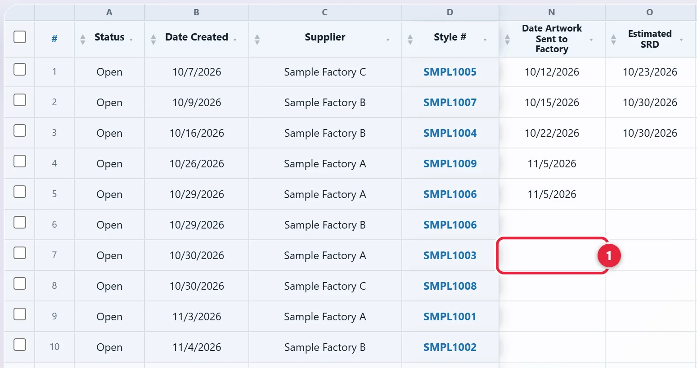
Once the cell is filled, the row leaves that group the next time you run the report. To change a cell you need Edit on the Dev Tracker. See Change a row and If you see Read only.
It's under Development 1. The PREVIEW tag means only admins see it. It opens on Rows. Rows and Board switch the view 2. The buttons beside them show one step at a time, with a count 3.
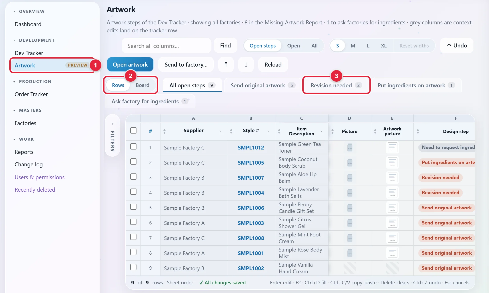
Each row is a row from the Dev Tracker. Design step says what Design has to do. Designer says who has it. Production step says what Production has to do. Scroll right to see them.
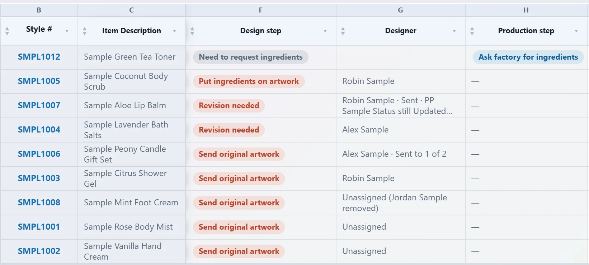
Open steps shows rows with a step due. Open shows every open row. All adds the closed ones. A designer can click Filters on the left of the grid and tick their name under Designer. See Find a sample. The notes for a style are in its panel.
The Board 1 is for the Design head and admins. It has one line for each style and Design step that's due. To send lines come first, then Unassigned, Assigned and Sent. Reference says what each one means.
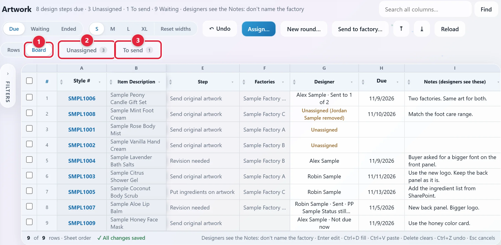
Click Unassigned 2 or To send 3 to see only those lines. Click it again to see them all. Waiting adds the styles waiting on ingredients. Ended shows lines that ended in the last 30 days.
Click Unassigned to see the lines with no designer. Tick the box at the left of each one you want 1. For one line, you can click its Item Description instead.
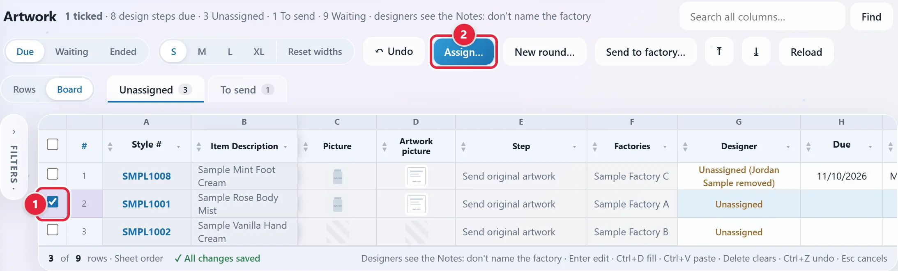
It's in the toolbar at the top 2. A popup opens.
Pick the Designer 1. Type the Due date if there is one 2. Type what the designer needs to know in Notes 3. Don't name the factory. Designers see these notes.
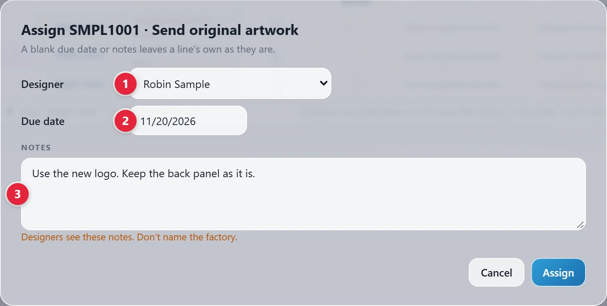
The line leaves the Unassigned list. Click Unassigned again to see every line, with the name in Designer. Changed your mind? Click ↶ Undo.
The popup reads the style's newest V folder, helps you send the files, and records what went out. It takes one style at a time.
On the Board, tick the style's line or click it. On Rows, tick the rows you're sending or click one. Then click Send to factory… in the toolbar. It's also in the style's panel.
The top shows the version, who saved it and the two files 1. A red line means something's wrong. See Fix a problem.
Click Open folder on the Design site ↗ and look at the artwork. The popup only checks that the files are there.
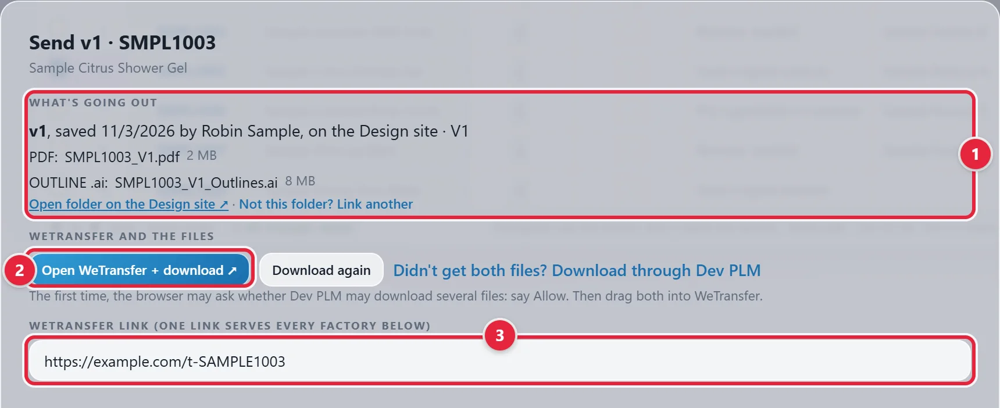
WeTransfer opens beside Dev PLM, and both files download 2. The first time, your browser may ask if Dev PLM may download several files. Say Allow. Then drag both files from your Downloads into WeTransfer. Choose the option that gives you a link, not an email, and wait for the upload to finish.
Only got one file? Click Didn't get both files? Download through Dev PLM. Download again gets them a second time. If your browser blocks popups, WeTransfer opens in a normal tab.
Copy the link from WeTransfer. Paste it in WeTransfer link 3. One link serves every factory in the popup.
Each factory has its own box. The rows this send is for start ticked 1. Untick any that aren't.
Date sent starts on today 2. Change it if the files went out earlier. It can't be later than today, because it feeds the factory's lead times.
Tick with ingredients if this version has the ingredients on it 3. It starts ticked when the step is Put ingredients on artwork, and when a ticked row already reads Yes under Artwork With Ingredients. Untick it if this version doesn't have the ingredients. When it's ticked, the email says so too.
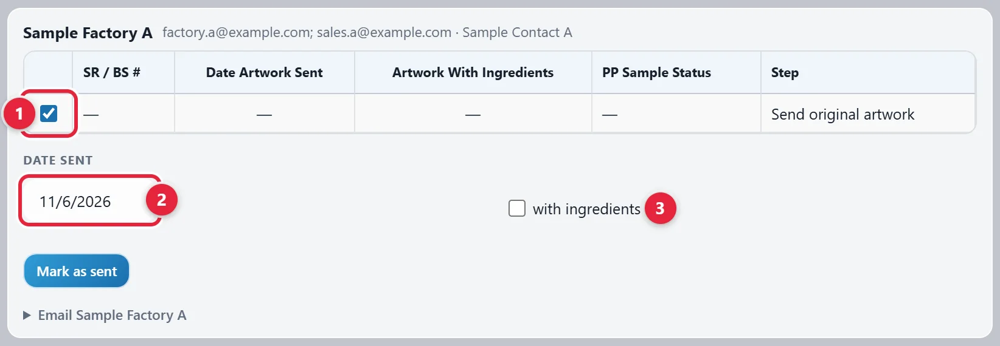
If a ticked row reads Updated Artwork Needed, you'll see Also change PP Sample Status 1. To clear Revision needed now, tick it and pick the status that's true now. The values are in Dropdown values, in the Dev Tracker guide.
If you leave it, the step stays due. On a line with a designer, the Board then reads Sent · PP Sample Status still Updated Artwork Needed.
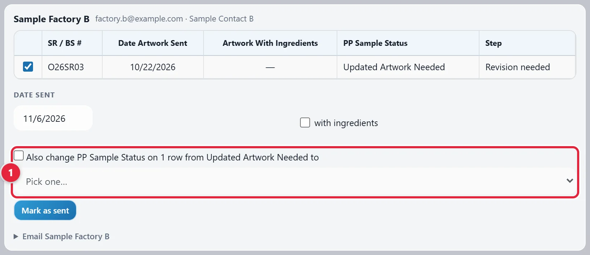
Click the Email line under the rows, such as Email Sample Factory A. It shows who it goes to, the subject and the message. The address comes from the Factories page.
Click Copy message 1 and paste it in an email. Or click Open in email 2 to start the email in your own mail app, all filled in. Nothing goes out until you press Send in your mail app.
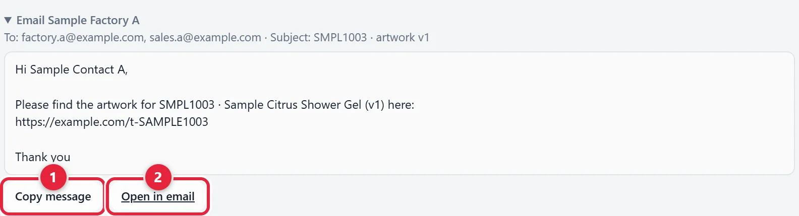
It's under the factory's rows. It records the version, factory, date, link and files. It fills in Date Artwork Sent to Factory on the ticked rows, only where it's blank. If with ingredients is ticked, it also sets Artwork With Ingredients Sent To Factory to Yes, only where it's blank.
A green line says what it did, and the top of the box shows the version sent. With no link yet, it asks Mark as sent without a WeTransfer link? first.
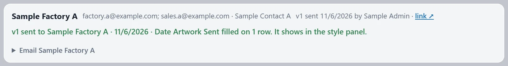
A style at two factories has two boxes. The factories where the step is due come first, with their rows ticked 1. A factory that has this version already shows when it went, with Send again… 2.
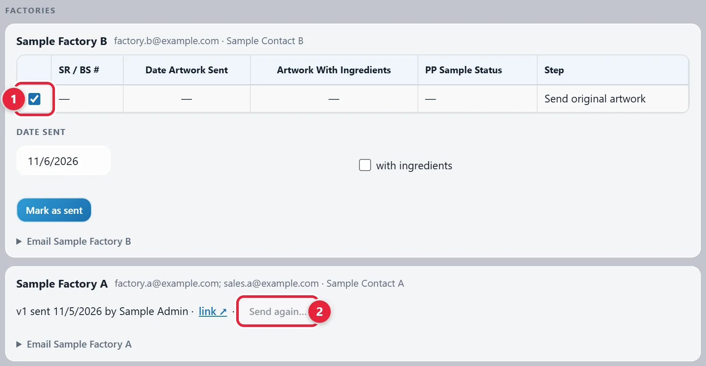
Click Close at the bottom of the popup. A factory you didn't mark gets nothing recorded. On the Board, a line with a designer reads Sent to 1 of 2 until every factory has it. Then it ends as Done, unless its step is still due. A line with no designer still reads Unassigned after a send. The style's panel shows what went.
These are the common ones. Reference lists others.
Nothing downloads. Save the file in the V folder on the Design site, then close the popup and open it again.
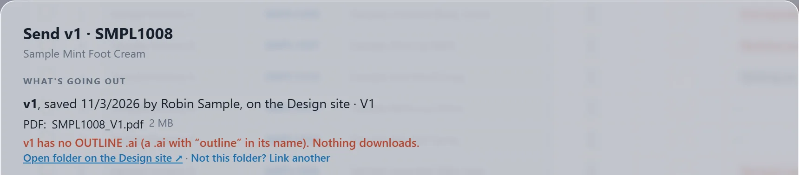
Pick the one that goes out. The buttons stay grey until you do.
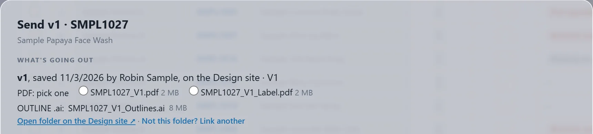
Open the style's folder in SharePoint. Copy the address from your browser's address bar, not Copy link. Paste it in the box and click Save link. Dev PLM keeps it for this style. If the popup found the wrong folder, click Not this folder? Link another and do the same.
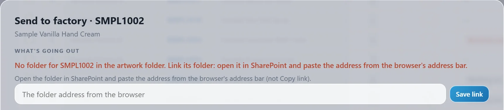
Click Use this folder on the correct one. It asks only once.
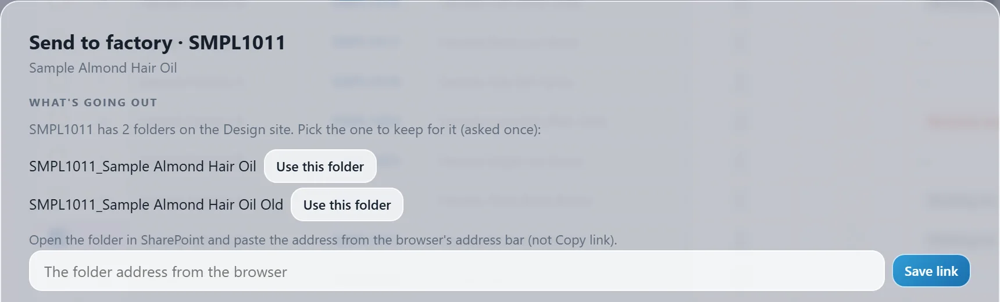
All of these are in the style's panel.
On the Board, click the blue Style #. On Rows, click the blue Style #, or click a row and then Open artwork. The panel shows the style's Dev Tracker rows, its steps and its lines 1. On Rows, the blue Style # also narrows the grid to that style. Press Esc to go back.
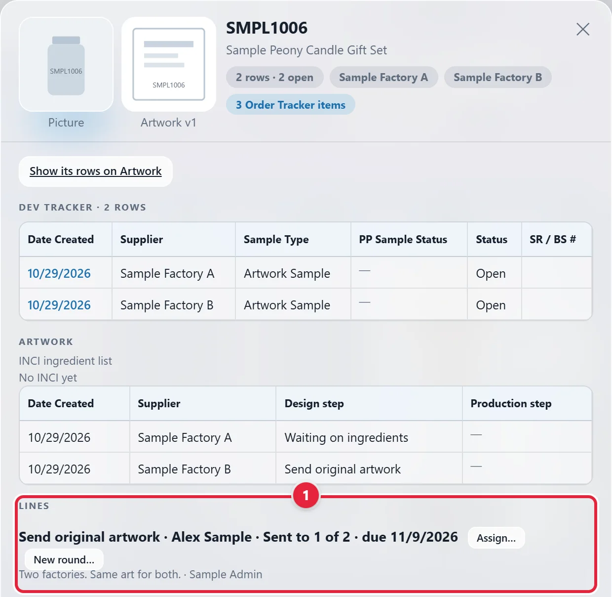
Each version sent is listed, newest first, with its date, factory, files and WeTransfer link. Send to factory… is here too 1, along with Send again… 2 and Withdraw… 3. Changes at the bottom lists what changed on the style.
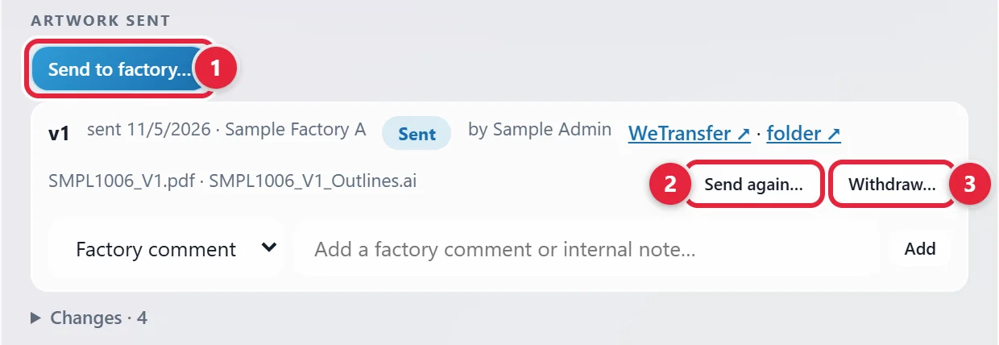
Use this when a WeTransfer link has expired. The version number stays the same, and no row changes.
The popup opens on that version's own files. Only a factory's latest version can go again.
Click Open WeTransfer + download ↗, as for a first send. Paste the new link in WeTransfer link 1. It has to be different from the old one.
It asks if you're sure. Click Send again 2. Then email the factory the new link.
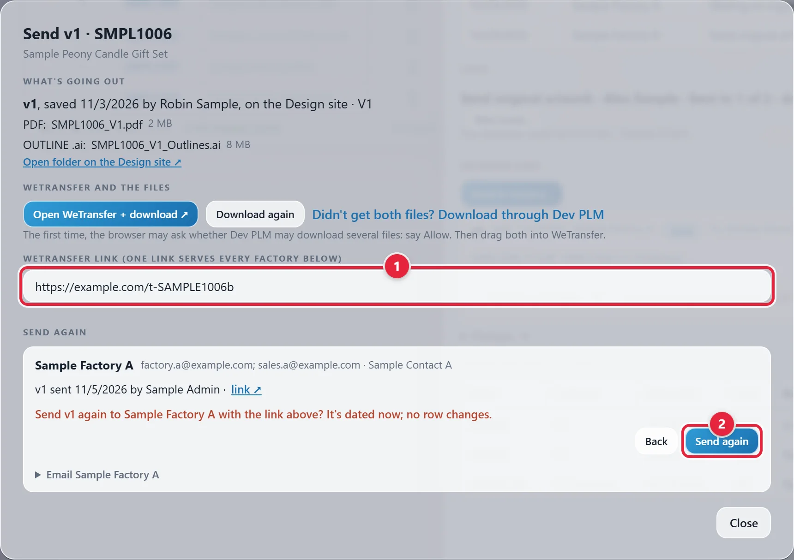
It's on the version in Artwork sent. A question says which cells will go back. Only a factory's latest version with no comments can be withdrawn.
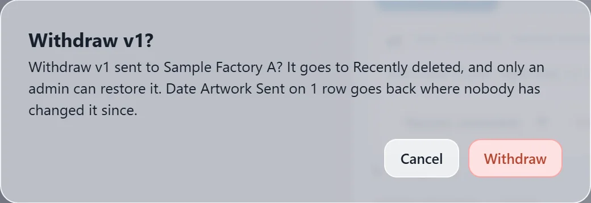
The version goes to Recently deleted. Only an admin can restore it. The cells it filled go back where nobody has changed them since. A date that was there before it was marked stays.
Under the version, pick Factory comment or Internal note. A factory comment changes the version's status from Sent to Comments received. An internal note doesn't.
↶ Undo can't take back a comment. To remove your own, click its ✕. An admin can remove anyone's. It asks first, then the comment goes to Recently deleted.
Use this when a line has gone to a factory and its step is still due. For example, a second revision while PP Sample Status still reads Updated Artwork Needed.
Click its Item Description. A tick doesn't count here.
It's in the toolbar. It's also on the line in the style's panel.
Designer starts on the line's own designer. Notes 1 are required on Revision needed. Don't name the factory.
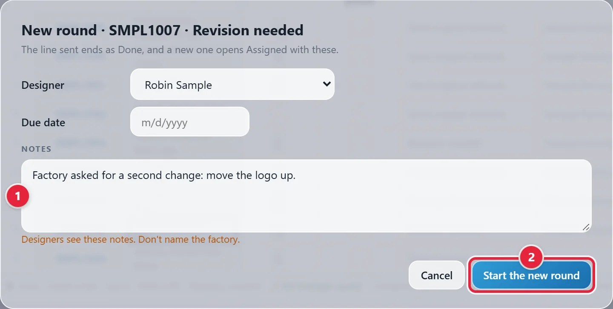
It's at the bottom 2. The line sent ends as Done. A new line opens as Assigned. ↶ Undo takes it back.
On a phone, swipe this table to see the rest.
| Step | Whose | Due on | Clears when | Report group |
|---|---|---|---|---|
| Send original artwork | Design | An open row with Sample Type Artwork Sample and no Date Artwork Sent to Factory | That date is filled | Missing Artwork Report: Send Artwork To Factory |
| Revision needed | Design | An open Artwork Sample row at Updated Artwork Needed | PP Sample Status changes | Missing Artwork Report: Updated Artwork Needed |
| Put ingredients on artwork | Design | An open Artwork Sample row with Ingredients Added To SharePoint at Yes and Artwork With Ingredients Sent To Factory blank | Artwork With Ingredients Sent To Factory is filled, or Ingredients Added To SharePoint changes from Yes | Missing Artwork Report: Send Ingredient Artwork To Factory |
| Ask factory for ingredients | Production | Any open row at Approved, with Date PPS Received filled and Ingredients Added To SharePoint blank | Ingredients Added To SharePoint is filled, or the row stops being Approved and received | PPS Pending: Reach Out To Factory For Ingredients |
Any step also clears when its row closes.
With no Design step due, an open Artwork Sample says why in grey:
| Grey words | What it means |
|---|---|
| Need to request ingredients | Approved and received, and Production's step is open. |
| Waiting on ingredients | Not both approved and received yet, with both ingredient columns blank. |
| Artwork done | Ingredients Added To SharePoint is N/A, or the ingredient artwork has gone. |
| Group | What it means |
|---|---|
| To send | It has a designer, and it has gone to some of its factories, not all yet. Designer reads like Alex Sample · Sent to 1 of 2. |
| Unassigned | Due, with no designer. It may say why, such as Unassigned (Jordan Sample removed), or that the person isn't a designer or has no Artwork View now. A send doesn't change this: it still reads Unassigned. |
| Assigned | It has a designer, and nothing has gone out for it yet. |
| Sent | It has a designer, it has gone to every factory, and the step is still due. It reads Sent · still due or Sent · PP Sample Status still Updated Artwork Needed. |
| Not due now | No row has this step due now. It can't be changed. |
| View | What it shows |
|---|---|
| Due | Every due line. It opens on this one. |
| Waiting | The due lines, then the styles at Need to request ingredients or Waiting on ingredients. |
| Ended | Lines ended in the last 30 days, as Done or No longer due, with why. Only for people who see every factory. |
Order: To send, Unassigned, Assigned, Sent, then Not due now. Inside each: by Due, then the soonest Needs To Be Approved By, then the oldest Date Created.
Columns: Style #, Item Description, Picture, Artwork picture, Step, Factories (a ✓ once sent there), Designer, Due, Notes (designers see these), Needs To Be Approved By. Filters on the left has Group, Designer, Step and Factory.
Typing on the Board: only Designer, Due and Notes can be changed. A paste, fill or clear covers one of these at a time. A line can't be unassigned: pick another designer, or ↶ Undo the Assign. A line sent to every factory where it's due can only change through New round….
| Column | What it is |
|---|---|
| Supplier, Style #, Item Description | Shown here. Change them on the Dev Tracker. |
| Picture | The style's picture from the Quote Directory. Click it for full size. |
| Artwork picture | The .jpg in the style's newest version. Click either picture for full size. On either one, a striped box means no picture, and a small lock means you can't open where it's kept. |
| Design step, Production step | Worked out from the row. Nobody types them. |
| Designer | From the Board. Read only here. |
| Date Artwork Sent to Factory, Needs To Be Approved By Date, Ingredients Added To SharePoint, Artwork With Ingredients Sent To Factory | Typed here or on the Dev Tracker. They need Edit on the Dev Tracker, and they save on the Dev Tracker row. |
| INCI ingredient list | The official list of ingredients. One per Style #, and every row of the style shows it. It needs Edit on Artwork. |
New rows are made on the Dev Tracker. Rows has no New Sample, Export or Delete. A change shows on the other screen within 30 seconds. Filters on the left has Design step, Designer, Production step, Supplier and Ingredients Added To SharePoint.
| Item | Standard |
|---|---|
| Where | Inside the artwork folder on the Design site, in the brand's folder. A brand can have category folders, with the style folders inside them. |
| Style folder | Style # _ description, or the Style # alone. The part before the first underscore must match the Style # exactly: SMPL1003 doesn't match SMPL1003-F. Dev PLM only finds a name that starts with 1 to 5 letters, then 2 or more digits. |
| Versions | Folders named V1, V2 and so on. V3_final or Version 2 also count, and capitals don't matter. The highest number goes out. No V folders means version 1, if a PDF or .ai is in the style folder. |
| Exactly one in the version. | |
| Illustrator | Exactly one .ai with "outline" in its name. |
| Artwork picture | The version's .jpg. With several, the one named like the PDF, or else the newest. |
| Not counted | Fonts and Links folders. A folder with no number. Files sitting in the style folder when it has V folders. |
| Linked folder | A folder picked or linked in the popup stays with the style. Unlink in the panel's Artwork sent takes it off, and the next send looks for the folder by its Style # again. |
| What you see | What to do |
|---|---|
| You don't have access to the Design site's artwork folder. | Ask Saul for read access to the Design site. |
| You don't have access to this style's folder on the Design site. | Ask Saul for read access to the Design site. |
| The folder linked for this style isn't there any more (moved or deleted). | Link it again: paste the folder's address. |
| Use the address bar, not Copy link. | Copy the address from the browser's address bar. |
| That address isn't on the Design site. | Copy the address of a folder on the Design site. |
| That folder isn't inside the artwork folder on the Design site. | Link a folder inside the artwork folder. |
| That's a file: link its folder. | Open the folder, not the file, and copy that address. |
| The style's folder has no version yet: no V folder, and no PDF or .ai in it. | Save the files first. |
| Two folders have the top number, v3. Pick the one going out (this send only). | Pick one. The pick isn't kept. |
| Not counted: this folder has no version number. If it's the newest, rename it. | Rename it with the V number the message gives. |
| The Design site's v2 isn't the v2 sent to this factory. Rename it V3. | Files changed after that send. Rename the folder as the message says. |
| This factory has v3, newer than the Design site's v2. | Check the Design site. An older version can't be marked. |
| v1's PDF was changed on the Design site after it went. Save it as V2. | Send again… needs the files as they went. Save the change as a new version. |
| v1's files aren't on the Design site any more. Send the newest version instead. | Close the popup and use Send to factory… for the newest version. |
| This factory has no open row of this style to mark. | Nothing to mark there. Check the row on the Dev Tracker. |
| SharePoint is busy. Try again in a minute. | Wait a minute, then open the popup again. |
| Couldn't reach SharePoint. Check the connection and try again. | Check your connection, then open the popup again. |
| SharePoint sent a page instead of the file (perhaps a sign-in). | Click Didn't get both files? Download through Dev PLM, or open the folder. |
| That doesn't look like a WeTransfer link. | Paste the whole link, just as WeTransfer gives it. |
| No WeTransfer link in the message: the factory won't get the files. | Click Back and paste the link, or Open anyway. |
| This factory has no email on the Factories page yet. | Use Copy message. Add the email on the Factories page. See Add a factory or change its email. |
| Too long for an email link: use Copy message. | Click Copy message and paste it in an email. |
| Tick the lines to send, or put the cursor on one. | Tick the line's box, or click the line. The cursor is the cell you clicked. |
| Send to factory… takes one style at a time. | Tick the rows of one style only. |
| Only due lines are sent from the Board. | Use Rows for that style. |
| v1 has comments, so it can't be withdrawn. | Delete the comments first. Only the writer or an admin can. |
Today only admins can do any of this. Each part opens for the team when an admin marks it Live on the Tools tab of Users & permissions. See Check the tool is Live. Artwork · Assignments and Artwork · Send to factory also need Artwork Live.
| Job | Who, once it's Live | Opens with |
|---|---|---|
| See Rows and open steps | Design and Production, by role. They need View on Artwork and the Dev Tracker. | Artwork |
| See the Designer column, pictures and lines | The same people. | Artwork · Assignments |
| Use the Board, Assign… and New round… | The Design head, with Edit on Artwork and View on the Dev Tracker. | Artwork · Assignments |
| Send to factory…, Mark as sent, Send again…, Withdraw… | The Design head, with Edit on Artwork and the Dev Tracker, and Factories: all. | Artwork · Send to factory |
| See versions sent | People who can open Artwork, for their own factories. | Artwork · Send to factory |
| Add a comment | People with Edit on Artwork. | Artwork · Send to factory |
| Be in the Designer list | People with the Designer tick and View on Artwork. | Artwork · Assignments |
| Restore a withdrawn version | Admins only, in Recently deleted. | Always |
An admin sets Design head and Designer in Users & permissions, on the People tab, under Artwork tasks. See Give access in Dev PLM.